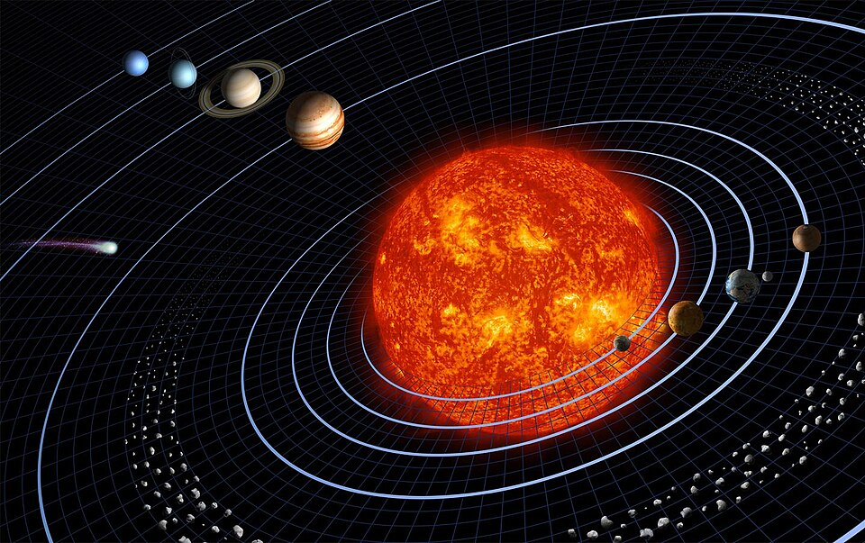

🪨 암석형 행성
단단한 암석과 금속으로 이루어진 작은 행성입니다. 태양 가까이에 모여 있습니다.
수성금성지구화성
태양을 중심으로 도는 여덟 개의 행성을 만나 보세요. 크기, 거리, 온도, 위성까지 행성마다 다른 모습을 쉽게 정리했습니다.
약 46억 년 전, 거대한 가스와 먼지 구름이 중력으로 뭉치면서 태양과 행성들이 만들어졌습니다.
태양계는 태양과 그 중력에 묶여 도는 천체들의 모임입니다. 여덟 개의 행성 외에도 왜소행성, 수많은 위성, 소행성과 혜성이 함께 태양 주위를 돌고 있습니다. 태양계 전체 질량의 약 99.8%를 태양이 차지합니다.

행성은 무엇으로 이루어졌는지에 따라 크게 세 무리로 나눌 수 있습니다.
단단한 암석과 금속으로 이루어진 작은 행성입니다. 태양 가까이에 모여 있습니다.
수소와 헬륨이 대부분인 거대한 행성입니다. 단단한 표면이 없습니다.
물, 암모니아, 메테인 같은 얼음 성분이 많은 차가운 거대 행성입니다.
카드를 누르면 크기, 거리, 온도, 재미있는 사실을 볼 수 있습니다.
행성 소개 보기 →